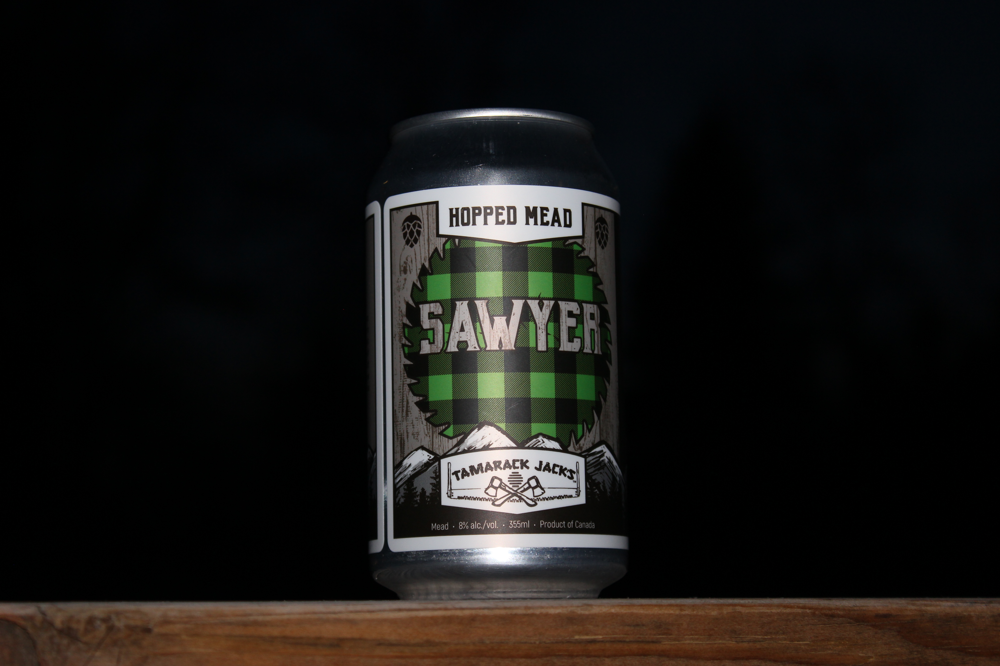

Brew Rundown
Mead
What is Mead? a lot of people don't know what mead is people just think that's what they drink on Game of Thrones or in the 1500s both are true but what makes up mead is honey and the fermentation of it. It's made to a similar process as wine and is wine classified as wine. mead is naturally very sweet and super delicious.
Why drink mead. I think it's because it tastes amazing it is all the benefits of wine but is a bit sweeter but not artificially fake. One downside is that people will think your hipster especially if you ask for it.
I tried Tamarac Jacks Sawyer Mead It's made with added hops which gives an extra beer flavor to the meat which is a crazy combination with that sweet from the meat and the bitter from the hops. It's incredibly delicious and I would recommend trying it. It's a nice entryway from beer to mead
